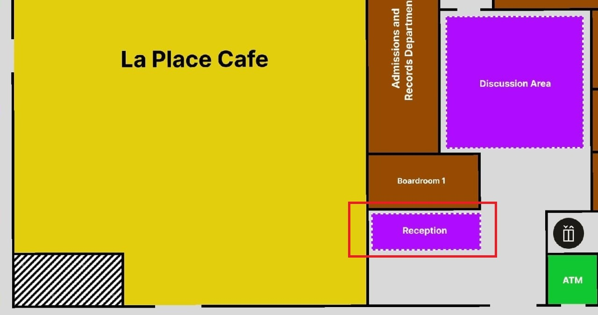

About Campus Lost & Found
Welcome to the Campus Lost & Found system of Quest International University. Our mission is to help students and staff easily report and locate lost or found items across the campus.
Previously, lost and found items were tracked manually through notice boards, WhatsApp groups, and security office logbooks. This made it difficult to track items efficiently and caused delays in returning lost belongings.
With this web-based system, you can submit lost or found item reports online, view available items, track their status, and contact the owner or finder directly. The system ensures data is secure, organized, and accessible anywhere on campus.
For physical item submission, students are strongly encouraged to bring any found items to the Reception Counter located at the TTS Ground Floor. This ensures that valuable belongings are safely kept and properly recorded in the system.

If you have lost an item, you may first check this website for updates. You can also visit the Reception Counter during office hours to inquire directly. Our staff will assist you in verifying and claiming your item securely.
We kindly remind all students and staff to act responsibly and help maintain a trustworthy campus environment by reporting any lost or found items promptly.
Our Team
The Campus Lost & Found system is developed by students of the Web Technology course at Quest International University. Our goal is to provide a reliable, easy-to-use platform that benefits everyone on campus.